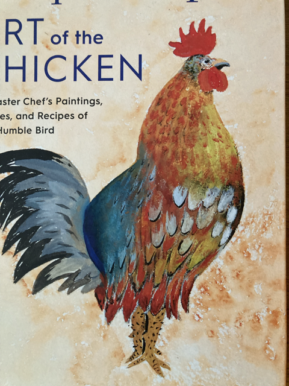
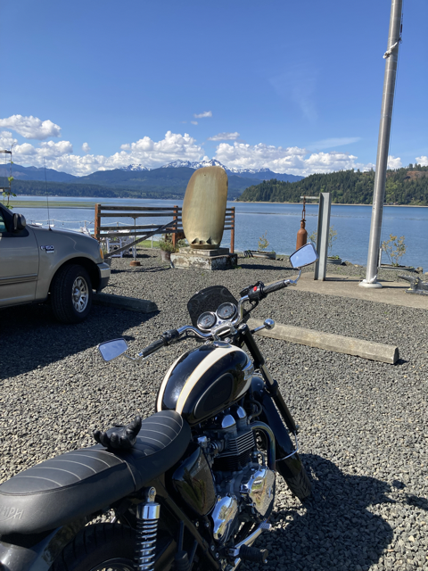
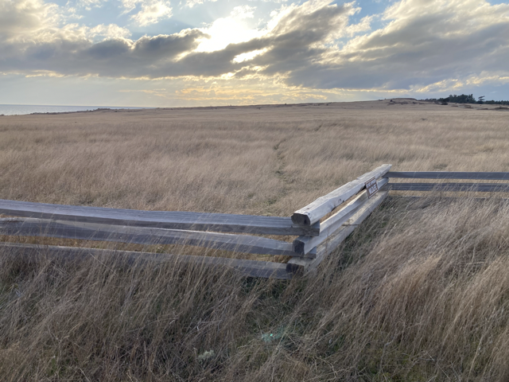
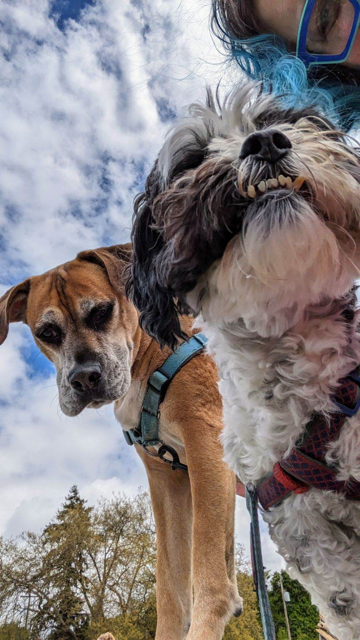
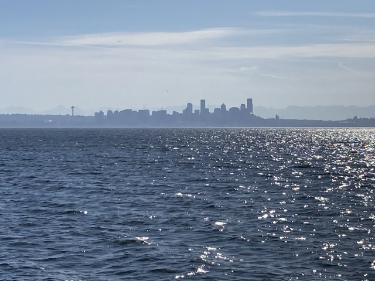

About Paul!
I am a former bartender and sommelier, trained in UX design, and realized along the way I wanted to write the code! Originally from the midwest, I moved to the PNW in 2021 with my partner and two dogs to try out a new area and be closer to the sea.
Recent projects

Education
- Epicodus - Certificate in Web and Mobile Devlopment (in progress)
- Metropolitan State University - Certificate in the Design of User Experience
- University of MN - B.A. in Political Science
Skills
- HTML5/CSS
- Javascript
- Figma
- Wireframes
current interests: travel, dogs, cooking, exploring the PNW





- coarsely chop and blanch garlic scapes in boiling water for 3 minutes
- shock blanched scapes in ice water until cooled through
- add 1/3C cashews, 1 packed cup of the blanched garlic scapes, 1/2 cup of grated parmesan, 1/2 tsp salt, and a few grinds of pepper to a blender on medium low speed
- slowly drizzle 1/4C olive oil while blending until the mix turns into a paste
- add to cooked pasta with 1/2C or so of cooked pasta water, top a sandwich, or freeze in an ice cube tray for later use! You can substitute other greens and nuts as needed. (if using another green, add as many cloves of garlic to the blender step as your heart tells you to)
Cooking!